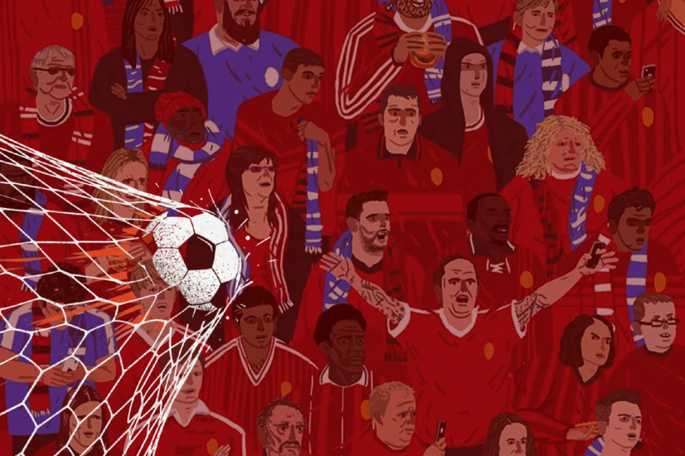

قبل أن يكون الإنسان عالمًا أو سياسيًا أو حتى مشجعًا لكرة القدم، كان يبحث عن شيء ينتمي إليه. فمنذ آلاف السنين، لم تكن النجاة تعتمد على قوة الفرد وحدها، بل على وجود جماعة تمنحه الحماية، وتشعره بالأمان، وتمنحه مكانًا بينها. ولهذا بقي الإنسان، رغم تغير العصور، يبحث دائمًا عن راية يقف تحتها. تبدلت تلك الرايات مع الزمن؛ فبعد أن كانت قبيلة، أصبحت وطنًا أو دينًا أو فكرةً أو حزبًا، وربما شعارَ نادٍ رياضي. تغيرت الأسماء، لكن الشعور الذي يجذب الإنسان إليها بقي ثابتًا. إنه الشعور نفسه الذي يجعل ملايين المشجعين يقولون: "فزنا" رغم أنهم لم يلمسوا الكرة، ويجعل آخرين يتبنون مواقف حادة من حرب تدور في بلد لم يزوروه يومًا. قد تبدو كرة القدم والحروب عالمين لا يجمع بينهما شيء، لكنهما يلتقيان عند نقطة واحدة: الانتماء. ففي المدرجات كما في ساحات الصراع، يقف الناس خلف لواء يعتقدون أنه يمثلهم، ويقسمون العالم، بوعي أو من دونه، إلى فريقين: نحن وهم. هذه ليست قصة كرة القدم، ولا قصة الحروب وحدها، بل قصة القوة التي تقف خلفهما معًا؛ القوة التي استطاعت أن تبني حضارات، وأن توحد شعوبًا، لكنها كانت أيضًا سببًا في كثير من أشكال التعصب والانقسام. إنها قصة الانتماء البشري. لماذا خُلِق الإنسان باحثًا عن الانتماء؟ يُعرَّف الانتماء بأنه ارتباط وجداني وفكري يجعل الإنسان يشعر بأنه جزء من جماعة أو مكان أو قضية، فينشأ لديه الإحساس بالهوية والولاء والمسؤولية تجاهها. ولا يقتصر هذا الشعور على الوطن، بل يمتد إلى العائلة، والدين، والثقافة، والأفكار، والمؤسسات، وحتى الفرق الرياضية. لكن التعريف وحده لا يفسر لماذا أصبح الانتماء جزءًا أساسيًا من طبيعة الإنسان، فعندما تتخيل إنسانًا عاش قبل عشرات آلاف السنين، يقف وحيدًا مع حلول الليل في أرض مفتوحة؛ لا مأوى يحتمي به، ولا نار تدفئه، ولا أحد يدافع عنه إذا اقترب منه خطر. في تلك اللحظة، لم يكن أهم سؤال يشغل عقله: من أنا؟ بل: مع من أنا؟ كان البقاء يعتمد على الجماعة. فالقبيلة لم تكن مجرد تجمع بشري، بل كانت مصدر الحماية والغذاء وتقاسم المسؤوليات. أما من يعيش خارجها، فكانت فرص نجاته محدودة. لذلك تشكل داخل الإنسان، عبر آلاف السنين، ارتباط عميق بالجماعة، حتى أصبح الانتماء حاجة نفسية لا تقل أهمية عن حاجته إلى الأمان. ومع تطور الحضارات، اختفت القبائل بصورتها القديمة، لكن الحاجة التي صنعتها بقيت حاضرة. لم يعد الإنسان يبحث عن مكان يختبئ فيه من الحيوانات المفترسة، بل عن هوية يشعر أنها تمثله. ولهذا أصبح ينتمي إلى وطن، أو دين، أو فكر، أو حزب، أو شركة، أو فريق رياضي، أو حتى مجتمع رقمي على شبكة الإنترنت. الانتماء يمنح الإنسان شعورًا بالمعنى، ويقوي روح التعاون والتضامن، ويدفعه إلى التضحية من أجل الجماعة التي يرى نفسه جزءًا منها. غير أن هذه القوة نفسها قد تتحول إلى مصدر للتعصب عندما تصبح هوية الجماعة أهم من الحقيقة، أو عندما يتحول الدفاع عنها إلى رفض لكل من يختلف معها. ومن هنا تظهر واحدة من أكثر الظواهر تأثيرًا في حياة البشر؛ فبمجرد أن يشعر الإنسان بأنه ينتمي إلى جماعة، يبدأ العالم في نظره بالانقسام إلى دائرتين واضحتين: دائرة التشابه ودائرة الاختلاف. وهنا تكمن الخطورة؛ إذ لا يكتفي الفرد بالتعصب لجماعته، بل يبدأ بـ 'شيطنة الآخر' وتجريده من إنسانيته ليبرر عداءه له. ورغم أن هذه الفكرة وُلدت قبل آلاف السنين حول نار قبيلة صغيرة، فإنها ما زالت حاضرة اليوم بصور جديدة؛ في الملاعب، وفي الانتخابات، وعلى منصات التواصل الاجتماعي، وفي مواقف الشعوب من الأزمات والحروب. تغيرت الرايات، لكن الآلية النفسية بقيت كما هي. لماذا أصبحت كرة القدم أكبر مسرح للانتماء؟ في تعريفها البسيط، كرة القدم ليست أكثر من لعبة يتنافس فيها فريقان على تسجيل الأهداف. لكن هذا التعريف يعجز عن تفسير ظاهرة تتكرر منذ أكثر من قرن؛ كيف استطاعت لعبة تعتمد على كرة ومرميين أن تصبح الحدث الوحيد تقريبًا القادر على إيقاف العالم لساعات، وأن تجعل مليارات البشر يعيشون المشاعر نفسها في اللحظة نفسها؟ قد توجد رياضات أسرع، أو أكثر تعقيدًا، أو تتطلب مهارات فردية أكبر، لكن أيًا منها لم ينجح في صناعة الرابط الجماعي الذي صنعته كرة القدم. فما الذي منحها هذه المكانة؟ تبدأ الحكاية قبل آلاف السنين، سنة 200 قبل الميلاد، حين عرف الإنسان ألعابًا تعتمد على ركل الكرة. ففي الصين القديمة ظهرت لعبة "تسوجو" التي استخدمها الجنود وسيلة للتسلية والمتعة، وتدريب اللياقة والانضباط والتي كانت قوانينها تمنع لمس الكرة باليدين أو ضرب المنافسين؛ فتحولت من تدريب بدني إلى رياضة شبه قومية في الصين. وفي أوروبا تحولت ألعاب الكرة خلال العصور الوسطى إلى احتفالات شعبية صاخبة، كانت تُمارس بعنف وفوضى، تقول إحدى الأساطير الشائعة أنّه عند الانتصار في حرب معينة، يحتفل الشعب الإنجليزي باستخدام جمجمة أحد الأعداء واللعب بها ككرة للقدم، وعدد اللاعبين يصل إلى ألف لاعب، مما أدى لنشوء ما يعرف بكرة القدم الغوغائية، لدرجة دفعت السلطات الإنجليزية في أكثر من مناسبة إلى منعها حفاظًا على النظام العام. لكن اللحظة التي غيرت تاريخ اللعبة جاءت في القرن التاسع عشر. ففي عام 1863 وُضعت أول القوانين الموحدة لكرة القدم، وأصبح بإمكان أي شخص، مهما كانت لغته أو ثقافته، أن يفهم قواعدها ويشارك فيها. وللمرة الأولى لم تعد الكرة مجرد لعبة محلية، بل لغة مشتركة يمكن أن يفهمها الجميع. وساعدت الثورة الصناعية واتساع الإمبراطورية البريطانية على انتشارها بسرعة مذهلة. لم تكن السفن البريطانية تحمل البضائع والآلات فقط، بل حملت معها لعبة بسيطة وجدت طريقها إلى الموانئ، والمصانع، والمدارس، والثكنات العسكرية، حتى أصبحت خلال عقود قليلة الرياضة الأكثر انتشارًا في العالم. غير أن انتشارها لم يكن نتيجة التاريخ وحده، بل لطبيعتها أيضًا. فهي لا تحتاج إلى تجهيزات معقدة أو ملاعب مجهزة؛ يمكن أن تبدأ في شارع ضيق، أو ساحة ترابية، أو فناء مدرسة، بكرة واحدة، أو بأي شيء مستدير يصلح للركل. ولهذا لم تبق حكرًا على الأغنياء أو الرياضيين، بل أصبحت جزءًا من الحياة اليومية لمختلف الطبقات والمجتمعات. ومع تطور وسائل الإعلام، تغيرت العلاقة بين الجماهير واللعبة. نقلت الإذاعة أصوات المعلقين إلى البيوت، ثم جاء التلفزيون ليجعل ملايين الأشخاص يشاهدون اللحظة نفسها في الوقت نفسه، قبل أن تحولها وسائل التواصل الاجتماعي إلى حدث لا ينتهي بانتهاء صافرة الحكم. أصبح المشجع يعيش مع فريقه كل يوم، يتابع أخباره، ويتفاعل مع جمهوره، ويشاركه أفراحه وإحباطاته، حتى غدت متابعة النادي جزءًا من روتينه اليومي. لكن السر الحقيقي لا يكمن في سهولة اللعبة أو انتشارها، بل في قدرتها على صناعة القصص؛ فكلُّ نادٍ يمتلك ذاكرة خاصة، وكل منتخب يحمل تاريخ أمة، وكل لاعب يمثل رحلة مليئة بالتحديات والنجاحات والإخفاقات. ومع مرور الوقت لا يبقى المشجع متفرجًا على تلك القصص، بل يشعر أنه أحد شخصياتها، وعندها لا يعود الهدف مجرد رقم يُضاف إلى لوحة النتيجة، بل يصبح لحظة يعيشها وكأنها جزء من حياته الشخصية. ولهذا لا يتعلق الناس بالأندية لأنها تحقق الانتصارات فقط، بل لأنها تمثل جزءًا من ذاكرتهم. فهناك من ورث تشجيع فريقه عن والده، وآخر ارتبط به بسبب مباراة لا ينساها، وثالث وجد في قصة لاعب ما ما يشبه قصته الشخصية. وهكذا تتحول كرة القدم من منافسة رياضية إلى مساحة تحفظ الذكريات، وتنقلها من جيل إلى آخر. وهنا تتجاوز اللعبة حدود الرياضة. فما يجمع آلاف الأشخاص في المدرجات ليس الكرة وحدها، بل الإحساس بأنهم يشتركون في قصة واحدة، ويرددون الهتاف نفسه، ويرتدون الألوان نفسها، وينتظرون النتيجة نفسها. إنها تجربة جماعية تعيد إنتاج حاجة قديمة صاحبت الإنسان منذ بداية وجوده، لكن في صورة أكثر حداثة. وربما لهذا السبب لم تستغرق الحكومات والمؤسسات وقتًا طويلًا حتى أدركت أن كرة القدم ليست مجرد وسيلة للترفيه، بل قوة اجتماعية قادرة على جمع ملايين الأشخاص حول رمز واحد، وتحريك مشاعرهم في الاتجاه نفسه. ومنذ تلك اللحظة، لم تعد الملاعب مكانًا للمنافسة الرياضية فحسب، بل أصبحت فضاءً تتقاطع فيه الرياضة مع السياسة، والإعلام، والاقتصاد، وتمهد الطريق لفهم كيف يمكن لمباراة واحدة أن يتجاوز تأثيرها حدود المستطيل الأخضر. عندما اكتشفت السياسة قوة الانتماء لم تكتشف السياسة كرة القدم، بل اكتشفت ما هو أقدم منها بكثير... الإنسان. فمنذ أن بدأت أولى التجمعات البشرية، أدرك قادة القبائل أن الجماعة لا تبقى متماسكة بالقوة وحدها، بل بإيمان أفرادها بأن مصيرهم واحد. فالإنسان الذي يرى أن بقاء الجماعة يعني بقاءه، سيقاتل دفاعًا عنها، ويتحمل المشقة من أجلها، ويحتفل بانتصاراتها كما لو كانت انتصاراته الشخصية. ومع مرور الزمن، تبدلت أسماء تلك الجماعات، لكن الفكرة بقيت كما هي. فالقبيلة أصبحت وطنًا، وأصبحت أحيانًا دينًا، أو قومية، أو حزبًا، أو طائفة، أو حتى ناديًا رياضيًا. تغيرت الرموز، لكن الآلية النفسية لم تتغير. وهنا اكتشفت السياسة واحدة من أهم الحقائق في التاريخ: الإنسان لا يتحرك بالوقائع وحدها، بل بالهوية التي يرى نفسه من خلالها. فالأفكار المجردة لا تدفع الجماهير إلى التضحية غالبًا، أما عندما ترتبط تلك الأفكار برمز يمثلهم، فإنها تتحول إلى قضية شخصية. ولهذا لا تبدأ معظم الخطابات السياسية بالأرقام والإحصاءات، بل تبدأ بتعريف الناس بمن يكونون، ومن يقف في الجهة المقابلة. بمجرد أن يقتنع الفرد بأنه ينتمي إلى معسكر معين، يصبح مستعدًا للدفاع عنه حتى قبل أن يراجع مواقفه بعقل بارد؛ فالمشكلة ليست في الاختلاف، بل في اللحظة التي تتحول فيها الهوية إلى عدسة يرى الإنسان من خلالها كل شيء. ولذلك تحرص الحكومات، منذ قرون، على بناء رموز مشتركة تجمع الناس حولها. فالعلم ليس قطعة قماش، والنشيد ليس كلمات ولحنًا، والنصب التذكارية ليست حجارة صامتة. إنها جميعًا أدوات تحمل معاني أكبر من شكلها المادي، وتستدعي في الذاكرة شعورًا بالمصير المشترك. ولهذا السبب لا تخلو المناسبات الوطنية من الأعلام، ولا تخلو الاحتفالات من الأناشيد، ولا تخلو الخطب من استحضار التاريخ والأبطال والذكريات. فكلما شعر الإنسان بأن هذه الرموز تمثله، ازداد ارتباطه بالجماعة التي ترفعها. ولا يقتصر الأمر على الدول، فالأحزاب السياسية تصنع شعاراتها الخاصة، والحركات الفكرية تبتكر رموزها، والمؤسسات تبني ثقافتها، وحتى الشركات العالمية تسعى إلى خلق قاعدة من المؤيدين يشعر أفرادها بأنهم ينتمون إلى هوية معينة، لا إلى منتج فحسب؛ ولهذا تبدو الملاعب أحيانًا نسخة مصغرة من المشهد السياسي. فهناك راية ترفرف، ونشيد يردده الجميع، وألوان توحد الآلاف، ورموز تتحول إلى مصدر للفخر، وجماهير تهتف بصوت واحد، وخصم يمثل الطرف الآخر. تختلف المناسبة، لكن البناء النفسي يكاد يكون متطابقًا. ولا يعني ذلك أن الولاء للجماعة أمر سلبي بطبيعته، بل على العكس، فهو من أهم الأسباب التي مكنت البشر من بناء المجتمعات، والتعاون، والدفاع عن أوطانهم، والوقوف إلى جانب بعضهم في الأزمات. لكن هذه القوة نفسها قد تتحول إلى أداة للتأثير عندما تُستغل لإلغاء التفكير النقدي، أو لتغذية مشاعر الكراهية تجاه المختلف وشيطنته. وهنا تكمن المأساة؛ إذ يغدو الدفاع مُنصباً على الأشخاص لا على المبادئ ولا على الحقيقة؛ لأنه في لحظة انتمائه الأعمى، لم يعد يرى الحقيقة، بل يرى نفسه ومن يمثله فقط. ولهذا يمكن أن نجد شخصًا يدافع عن حزب لم يُحسّن واقعه، وآخر يبرر أخطاء مسؤول لمجرد أنه ينتمي إلى التيار نفسه، وثالثًا يهاجم إنسانًا بسبب قوميته أو طائفته أو لون بشرته، ورابعًا يشعر بأن خسارة فريقه الرياضي إهانة شخصية، وخامسًا ينخرط في صراع إلكتروني حول حرب لم يعشها، لأنه يرى أحد أطرافها امتدادًا لهويته. قد تبدو هذه المواقف متباعدة، لكنها في حقيقتها تنطلق من الدافع نفسه. فعندما يصبح الإنسان جزءًا من جماعة، فإنه لا يدافع عنها فقط، بل يدافع عن الصورة التي كونها عن نفسه من خلالها. ومن هنا لا يعود السؤال: لماذا يصطف الناس خلف الرموز؟ بل يصبح السؤال الأهم: من يصنع هذه الرموز؟ ومن يحدد الرواية التي يلتف الناس حولها؟ فعندما تمتلك جهة ما القدرة على تشكيل هوية الجماهير، فإنها لا تؤثر في آرائهم فحسب، بل تؤثر في الطريقة التي يرون بها العالم كله. وربما لهذا السبب كانت المعارك الكبرى عبر التاريخ لا تُخاض بالسلاح وحده، بل بالأفكار، والرموز، والقصص التي تجعل الناس يعتقدون أنهم يدافعون عن أنفسهم، بينما هم في الحقيقة يدافعون عن رواية آمنوا بها. عندما تجاوزت كرة القدم حدود الملعب لم تبقَ كرة القدم داخل حدود المستطيل الأخضر طويلًا، لأن المشاعر التي تولدها كانت أكبر من أن تبقى في الملعب. في عام 1978، استضافت الأرجنتين كأس العالم بينما كانت تعيش واحدة من أكثر مراحلها قسوة تحت الحكم العسكري. وبينما امتلأت الشوارع بالاحتفالات بعد فوز المنتخب، كانت مآسي "الحرب القذرة" تتوارى خلف صخب المدرجات. لم تصنع البطولة تلك الأحداث، لكنها منحت السلطة فرصة لتقديم رواية أخرى عن البلاد. وفي العراق عام 2007، حدث العكس تقريبًا. ففي خضم الحرب والانقسام، جمع فوز المنتخب بكأس آسيا ملايين العراقيين تحت علم واحد، ولو لساعات قليلة، ليذكرهم بأن ما يجمعهم قد يكون أكبر مما يفرقهم. أما في السلفادور وهندوراس عام 1969، فقد تحولت مباريات تصفيات كأس العالم إلى شرارة سرّعت اندلاع نزاع كان يتخمر أصلًا، لتكشف أن المشاعر الجماعية، إذا امتزجت بالأزمات السياسية، قد تمتد آثارها إلى ما هو أبعد من المدرجات. وإذا أردنا مثالاً صارخاً على ذلك داخل حدود الدولة الواحدة، لا نجد أصدق من الصراع التاريخي بين قطبي الكرة الإسبانية؛ ريال مدريد وبرشلونة. قد يرى المشجع العادي في "الكلاسيكو" مجرد مباراة بين فريقين يتنافسان على اللقب، لكن خلف هذا المشهد الرياضي يكمن صراع سياسي وهوياتي عميق؛ فبرشلونة، تاريخياً، لم يكن مجرد نادٍ، بل كان رمزاً للهوية والقومية الكتالونية التي تسعى للتميز والاستقلال، بينما ارتبط ريال مدريد في الذاكرة الجمعية بمركزية الدولة الإسبانية. ورغم أن هذا التناقض السياسي لا يُطرح علناً في الصحافة الرياضية اليوم ليبقى الصراع في إطاره التنافسي أمام المشجعين، إلا أنه المحرك الخفي الذي يمنح هذه المواجهات ثقلها ورمزيتها، ويحولها من مباراة كرة قدم إلى ساحة لتعزيز الهوية والذات على مستوى العالم. تكفي هذه الأمثلة لندرك أن كرة القدم لم تكن يومًا مجرد لعبة، بل مرآة تكشف ما يختبئ داخل المجتمعات. فهي لا تصنع الولاء الجماعي، لكنها تكشف قوته، ولا تخلق الصراعات، لكنها قد تضخمها أو توحد الناس في مواجهتها. وربما لهذا لم يكن السؤال منذ البداية عن كرة القدم أصلًا، بل عن الإنسان. فالإنسان لا يعيش بالمنطق وحده، بل بالقصص التي يؤمن بها، والرموز التي يلتف حولها، والجماعات التي تمنحه شعورًا بأنه جزء من شيء أكبر من نفسه. ومن هنا استطاع أن يبني الحضارات، وأن يحرر الأوطان، لكنه استطاع أيضًا أن يخوض الحروب، وأن ينقسم، وأن يوجه ويُوجَّه. لذلك، قد لا يكون الجمهور أكبر قوة على الأرض، ولا أسهلها للتوجيه. الحقيقة أن القوة تكمن في ذلك الشعور الذي يجعل ملايين الأشخاص يرون أنفسهم في راية واحدة، أو قصة واحدة، أو هدف واحد. فمن يفهم هذه القوة، يستطيع أن يوحد الشعوب... أو يقودها حيث يريد. ويبقى السؤال الذي رافق الإنسان منذ أن غادر القبيلة الأولى وحتى امتلأت مدرجات الملاعب بالملايين: إذا كان الإنسان لا يستطيع أن يعيش بلا راية يلتف حولها، فهل تكمن حريته في اختيار الراية... أم في قدرته على أن يسأل نفسه دائمًا: لماذا أقف خلفها؟
